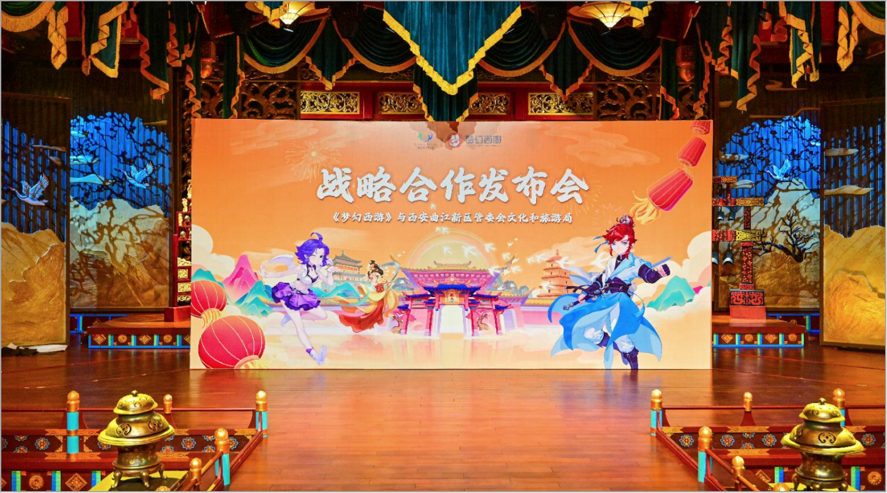

项目背景
网易希望在西安大唐不夜城——全国顶流的文旅地标——做梦幻西游二十周年的线下发布。这是一个强强联合的项目，但协调难度也成倍增加：既要满足网易的品牌要求，又要符合不夜城的场地规范。
我的角色
作为项目经理，我的核心工作是协调两端——一头是网易的营销团队，对视觉呈现和传播效果要求极为苛刻；另一头是大唐不夜城的管理方，对场地使用、人流量控制、安全预案有严格的审批流程。我在中间梳理了双方的需求清单，逐条对齐，把能妥协的、不能妥协的分开，两边各让一步的方案反而比单方面让步的方案执行得更顺利。
